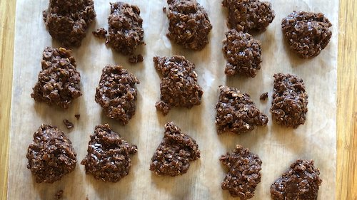

No Bake Cookies

Make These Gooey Delights on the Stovetop
I've made these cookies since I was a kid. They come together in less than 20 minutes and are perfect for sharing.
Ingredients
- 1 ¾ cups white sugar
- ½ cup milk
- ½ cup butter
- 4 tablespoons unsweetened cocoa powder
- ½ cup crunchy peanut butter
- 3 cups quick-cooking oats
- 1 teaspoon vanilla extract
Steps
- 1 teaspoon vanilla extract
- Bring to a boil, and cook for 1 1/2 minutes.
- Remove from heat, and stir in peanut butter, oats, and vanilla.
- Drop by teaspoonfuls onto wax paper.
- Let cool until hardened.
Recipe and photo courtesy of allrecipes.com.